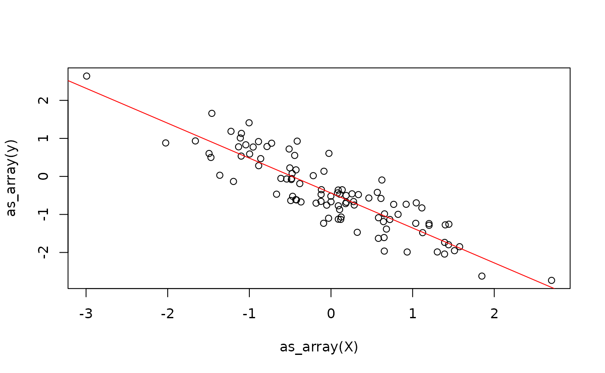

In this vignette, you will learn everything you need to know to get started implementing numerical algorithms using {anvil}. If you have experience with JAX in Python, you should feel right at home.
The AnvilTensor
We will start by introducing the main data structure, which is the
AnvilTensor. It is essentially like an R
array, with some differences:
- It supports more data types, such as different precisions, as well as unsigned integers.
- The tensor can live on different platforms, such as CPU or GPU.
- 0-dimensional tensors can be used to represent scalars.
We can create such an object from R data types using the
nv_tensor and friends functions. Below, we create a
0-dimensional tensor (i.e., a scalar) of type int16 on the
CPU.
## AnvilTensor
## 1
## [ CPUi16{} ]Note that for creation of scalars, you can also use
nv_scalar as a shorthand to skip specifying the shape.
nv_scalar(1L, dtype = "i16", device = "cpu")## AnvilTensor
## 1
## [ CPUi16{} ]We can also create higher-dimensional tensors, for example a 2x3 CPU
tensor of type f32. Below, we omit specifying the platform
and datatype, as it will default to "cpu" and
"f32". Note that the default datatype depends on the input
datatype.
## AnvilTensor
## 1 3 5
## 2 4 6
## [ CPUi32{2x3} ]
y <- nv_tensor(x, dtype = "f32")
y## AnvilTensor
## 1.0000 3.0000 5.0000
## 2.0000 4.0000 6.0000
## [ CPUf32{2x3} ]In order to convert an AnvilTensor back to a regular R
array, you can use the as_array() function.
as_array(y)## [,1] [,2] [,3]
## [1,] 1 3 5
## [2,] 2 4 6At first, working with AnvilTensors may feel a bit
cumbersome, because you cannot directly apply functions to them like you
would with regular R arrays.
x + x## [,1] [,2] [,3]
## [1,] 2 6 10
## [2,] 4 8 12
#y + yJIT Compilation
In order to work with AnvilTensors, you need to convert
the function you want to apply to a jit-compiled version via
anvil::jit().
plus_jit <- jit(`+`)
plus_jit(y, y)## AnvilTensor
## 2.0000 6.0000 10.0000
## 4.0000 8.0000 12.0000
## [ CPUf32{2x3} ]The result of the operation is again an AnvilTensor.
We can, of course, jit-compile more complex functions as well.
Below, we define a function that takes in a data matrix
X, a weight vector beta and a scalar bias
b, and computes the linear model output \(y = X \times \beta + \alpha\).
linear_model_r <- function(X, beta, alpha) {
X %*% beta + alpha
}
linear_model <- jit(linear_model_r)
X <- nv_tensor(rnorm(6), dtype = "f32", shape = c(2, 3))
beta <- nv_tensor(rnorm(3), dtype = "f32", shape = c(3, 1))
alpha <- nv_scalar(rnorm(1), dtype = "f32")
linear_model(X, beta, alpha)## AnvilTensor
## 2.7911
## -1.1904
## [ CPUf32{2x1} ]One current restriction of {anvil} is that the function has to be re-compiled for every unique combination of inputs shapes, data-types, and platforms.
To demonstrate this, we create a slightly modified version of
linear_model.
To demonstrate this, we create a little helper function that creates example input data with different numbers of observations:
simul_data <- function(n, p) {
list(
X = nv_tensor(rnorm(n * p), dtype = "f32", shape = c(n, p)),
beta = nv_tensor(rnorm(p), dtype = "f32", shape = c(p, 1)),
alpha = nv_scalar(rnorm(1), dtype = "f32")
)
}Below, we call the function twice on data with the same shapes.
do.call(linear_model2, simul_data(2, 3))## compiling ...## AnvilTensor
## 4.9640
## -0.1413
## [ CPUf32{2x1} ]
do.call(linear_model2, simul_data(2, 3))## AnvilTensor
## 0.6140
## -2.5214
## [ CPUf32{2x1} ]We can notice that we only see the "compiling ..."
message the first and third time. This is, because the first time, the
function is compiled into an XLA executable and cached for
later reuse. The second time, we don’t execute the R function at all,
but directly run the cached XLA executable. This executable
does not contain “standard” R code, like the cat() call,
but records only the operations applied to
AnvilTensors.
If we now call the function on data with different shapes, we see that the function is re-compiled.
y_hat <- do.call(linear_model2, simul_data(4, 3))## compiling ...Because the compilation step itself can take some time, {anvil} therefore gives the best results when the same function is called many times with the same input shapes, data types, and platforms, or the computation itself is sufficiently large to amortize the compilation overhead. One common application scenario where this assumption holds are iterative optimization algorithms.
Static Arguments
One feature of {anvil} is that not all arguments of
jit-compiled functions need to be
AnvilTensors. For example, we might want a linear model
with or without an intercept term. To do so, we add the logical argument
with_bias to our function. We need to mark this argument as
static, so {anvil} knows to treat this as a regular R value
instead of an AnvilTensor.
linear_model3 <- jit(function(X, beta, alpha = NULL, with_bias) {
if (with_bias) {
cat("Compiling without bias ...\n")
X %*% beta + alpha
} else {
cat("Compiling with bias ...\n")
X %*% beta
}
}, static = "with_bias")We can call this function now with or without a bias term:
linear_model3(X, beta, with_bias = FALSE)## Compiling with bias ...## AnvilTensor
## 2.8538
## -1.1277
## [ CPUf32{2x1} ]
linear_model3(X, beta, alpha, with_bias = TRUE)## Compiling without bias ...## AnvilTensor
## 2.7911
## -1.1904
## [ CPUf32{2x1} ]Nested Inputs and Outputs
Static arguments work differently than AnvilTensors as
the function will not be re-compiled for each new observed value of the
static argument.
Note also, that the inputs, as well as the outputs, can also contain
nested data structures that contain AnvilTensors, although
we currently only support (named) lists.
linear_model4 <- jit(function(inputs) {
list(y_hat = inputs[[1]] %*% inputs[[2]] + inputs[[3]])
})
linear_model4(list(X, beta, alpha))## $y_hat
## AnvilTensor
## 2.7911
## -1.1904
## [ CPUf32{2x1} ]So far, we have only implemented the prediction step for a linear model. One of the core applications of anvil is to implement learning algorithms, for which we often need gradients, as well as control flow. We will start with gradients.
Automatic Differentiation
In anvil, you can easily obtain the gradient function of a
scalar-valued function using gradient(): Currently,
vector-valued functions cannot be differentiated. Below, we implement
implement the loss function for our linear model.
We now need some target variables y, so we simulate some
data from a linear model:
beta <- rnorm(1)
X <- matrix(rnorm(100), ncol = 1)
alpha <- rnorm(1)
y <- X %*% beta + alpha + rnorm(100, sd = 0.5)
plot(X, y)Next, we randomly initialize the model parameters:
beta_hat <- nv_tensor(rnorm(1), shape = c(1, 1), dtype = "f32")
alpha_hat <- nv_scalar(rnorm(1), dtype = "f32")We can now define a function that does the prediction and calculates the loss. Note that we are calling into the original R function that does the prediction and not its jit-compiled version.
model_loss <- function(X, beta, alpha, y) {
y_hat <- linear_model_r(X, beta, alpha)
mse(y_hat, y)
}Using the gradient() transformation, we can
automatically obtain the gradient function of model_loss
with respect to some of its arguments, which we specify.
Finally, we define the update step for the weights using gradient descent.
update_weights <- jit(function(X, beta, alpha, y, lr) {
lr <- nv_scalar(0.1)
grads <- model_loss_grad(X, beta, alpha, y)
beta_new <- beta - lr * grads$beta
alpha_new <- alpha - lr * grads$alpha
list(beta = beta_new, alpha = alpha_new)
})This already allows us to train our linear model using gradient descent:
weights <- list(beta = beta_hat, alpha = alpha_hat)
for (i in 1:100) {
weights <- update_weights(X, weights$beta, weights$alpha, y)
}## [1] 100
While this might seem like a reasonable solution, it continuously switches between the R interpreter and the XLA runtime. Moreover, we allocate new tensors in each iteration for the weights. While the latter might not be a big problem for small models, it can lead to significant overhead when working with bigger tensors. Next, we will briefly address the concept of immutability in anvil and which options you have have to work around it.
Immutability
Conceptually, whenever we are defining programs in anvil, we are strictly following value semantics. This means, in-place modifications like updating an array element are conceptually impossible.
When we are dealing with updating an existing tensor, this might
either be: 1. Updating an AnvilTensor that “lives within” a
jit-compiled function. 2. Updating an AnvilTensor living in
R through a jit-compiled function.
For the first category, there is function TODO demonstrated below.
# TODOThe thing to note is that while conceptually, this is not an in-place update, but creates a new tensor, the XLA compiler is able to optimize this, ensuring that no unnecessary copies are actually made.
For the second category, we can mark arguments of a jit-compiled function as “donatable”. This means, we are telling the XLA runtime that after we pass those tensors marked as donatable into the function, we will no longer use them in R. The XLA compiler will therefore be able to reuse the memory.
# TODOControl Flow
Earlier, we have already used R control flow to train our linear model.
In principle, there are three ways to handle control-flow in anvil:
- Embed jit-compiled functions inside R control-flow constructs, which we have seen earlier.
- Embed R control flow inside a jit-compiled function (we have also seen this earlier when our linear model allowed to optionally include a bias term).
- Use special control-flow primitives provided by anvil, such as
nv_while()andnv_if().
What’s the best solution depends on the specific scenario.
One thing to be aware of is that we usually don’t want R loops within the jit-compiled function. This is, because the loop will be unrolled during compilation, which can lead to very large compilation times and big executables.
The only thing we have not demonstrated so far is how
When doing this, we have the choice to either implement the loop in R, and call into a jit-compiled function in each iteration, or implement the loop as part of the jit-compiled function itself.
The advantage of the former is that this allows including standard R code in the loop, which can e.g. be useful for logging purposes. However, depending on the duration of each iteration, there might be a significant overhead from switching between R and the compiled code.
As an example, we will fit the above linear model using gradient descent. Of course, we would usually fit the model by solving the normal equations directly, but this is just for demonstration purposes.